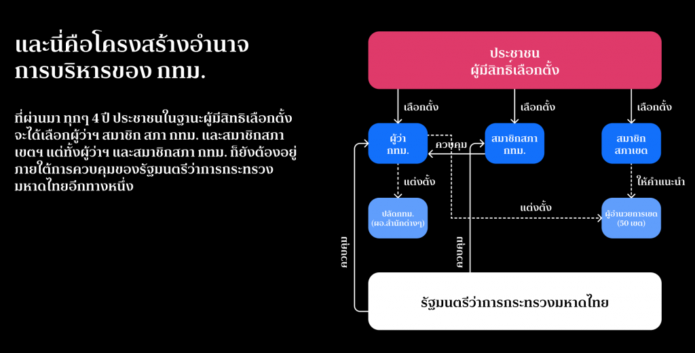

ประวัติ กรุงเทพมหานคร
ถ้าพูดถึง กรุงเทพมหานคร หลายคนต้องนึกถึง เมืองใหญ่ ที่มี แม่น้ำเจ้าพระยา ไหลผ่านกลางใจเมือง เต็มไปด้วยวัดวาอารามที่สวยงาม ย่านธุรกิจที่คึกคัก และเป็น เมืองหลวงของประเทศไทย ทำให้ปัจจุบัน กรุงเทพฯ เป็นศูนย์กลางในทุกๆ ด้านของไทยเราค่ะ แน่นอนว่าเมืองหลวงแห่งนี้มีประวัติศาสตร์ที่น่าสนใจไม่แพ้กรุงเก่าอย่าง พระนครศรีอยุธยา เลยทีเดียว ตามเรามารู้จัก กรุงเทพฯ ให้ดีกว่าที่เคยผ่าน ประวัติ กรุงเทพมหานคร ไปดูเรื่องราวกว่าหลายร้อยปี และรู้จักที่เที่ยวสำคัญๆ ในกรุงเทพฯ
ในสมัยกรุงศรีอยุธยานั่น กรุงเทพฯ ยังเป็นเพียงเมืองการค้าขนาดเล็ก อยู่ที่ปากแม่น้ำเจ้าพระยา แต่ต่อมาหลังจากการสถาปนาเมืองหลวงใหม่ ทำให้กรุงเทพฯ เป็นที่ตั้งของ 2 เมืองหลวงที่สำคัญก็คือ กรุงธนบุรี และ กรุงรัตนโกสินทร์ ค่ะ ทำให้กรุงเทพฯ เติบโต และกลายเป็นหัวใจสำคัญของประเทศ
หลังสิ้นรัชสมัยของ สมเด็จพระเจ้าตากสิน หรือ พระเจ้ากรุงธนบุรี ได้มีการสถาปนา กรุงรัตนโกสินทร์ ขึ้นเป็น เมืองหลวงของประเทศไทย ในวันที่ 21 เมษายน พ.ศ.2325 ในรัชสมัยของ พระบาทสมเด็จพระพุทธยอดฟ้าจุฬาโลก ซึ่งปราบดาภิเษกเป็นปฐมกษัตริย์แห่งราชวงศ์จักรี เนื่องจาก กรุงธนบุรี เมืองหลวงเดิม มีความคับแคบ และไม่ต้องด้วยหลักพิชัยสงคราม ทำให้ กรุงเทพมหานคร กลายเป็นเมืองหลวงมาจนถึงปัจจุบัน
และเมื่อวันที่ 21 ธันวาคม พ.ศ.2514 รัฐบาลจอมพลถนอม กิตติขจร ได้รวม จังหวัดพระนคร และ จังหวัดธนบุรี เข้าด้วยกันเป็น นครหลวงกรุงเทพธนบุรี และภายหลังการปรับปรุงการปกครองเมื่อวันที่ 14 ธันวาคม พ.ศ.2515 จึงได้เปลี่ยนเป็นชื่อเป็น กรุงเทพมหานคร
อีกทั้งในปัจจุบัน กรุงเทพมหานคร เป็นเขตปกครองพิเศษของประเทศไทย ไม่ได้มีสถานะเป็นจังหวัดเป็นจังหวัดอื่นๆ กรุงเทพมหานคร มีการเลือกตั้งผู้บริหารท้องถิ่นโดยตรง

ที่ตั้งอาณาเขต
กรุงเทพฯ เมืองหลวงของประเทศและเป็น “มหานคร” ที่เป็นศูนย์กลางความเจริญทุกด้าน โดยแนวนโยบายการพัฒนาระดับประเทศของภาครัฐ มุ่งเน้นขยายการพัฒนาด้านต่างๆ ไปในเขตจังหวัดปริมณฑลใกล้เคียง 5 จังหวัด คือ นนทบุรี ปทุมธานี สมุทรปราการ สมุทรสาคร และนครปฐม เนื่องจากพื้นที่ของความเป็นเมืองหลวงและกิจกรรมต่างๆ มีความต่อเนื่องกันจนเรียกได้ว่าเป็นเมืองเดียวกันในทุกด้าน
กรุงเทพมหานครตั้งอยู่ในบริเวณภาคกลางตอนล่างของประเทศไทย บริเวณละติจูดที่ 13.45 องศาเหนือ ลองจิจูด 100.28 องศาตะวันออก โดยเป็นเมืองหลวงของประเทศ มีพื้นที่ทั้งหมดประมาณ 1,568.7ตารางกิโลเมตร และมีลักษณะภูมิศาสตร์ที่สำคัญ ดังนี้
เขตการปกครอง
กรุงเทพมหานครเป็นองค์กรปกครองส่วนท้องถิ่นรูปแบบพิเศษของประเทศไทย มิได้มีสถานะเป็นจังหวัด คำว่า "กรุงเทพมหานคร" นั้นยังใช้เรียกองค์กรปกครองส่วนท้องถิ่นของกรุงเทพมหานครอีกด้วย มีโครงสร้างประกอบด้วยสภากรุงเทพมหานครและผู้ว่าราชการกรุงเทพมหานคร กรุงเทพมหานครมีการเลือกตั้งผู้บริหารท้องถิ่นโดยตรง
- เขตพระนคร
- เขตดุสิต
- เขตหนองจอก
- เขตบางรัก
- เขตบางเขน
- เขตบางกะปิ
- เขตปทุมวัน
- เขตป้อมปราบศัตรูพ่าย
- เขตพระโขนง
- เขตมีนบุรี
- เขตลาดกระบัง
- เขตยานนาวา
- เขตสัมพันธวงศ์
- เขตพญาไท
- เขตธนบุรี
- เขตบางกอกใหญ่
- เขตห้วยขวาง
- เขตคลองสาน
- เขตตลิ่งชัน
- เขตบางกอกน้อย
- เขตบางขุนเทียน
- เขตภาษีเจริญ
- เขตหนองแขม
- เขตราษฎร์บูรณะ
- เขตบางพลัด
- เขตดินแดง
- เขตบึงกุ่ม
- เขตสาทร
- เขตบางซื่อ
- เขตจตุจักร
- เขตบางคอแหลม
- เขตประเวศ
- เขตคลองเตย
- เขตสวนหลวง
- เขตจอมทอง
- เขตดอนเมือง
- เขตราชเทวี
- เขตลาดพร้าว
- เขตวัฒนา
- เขตบางแค
- เขตหลักสี่
- เขตสายไหม
- เขตคันนายาว
- เขตสะพานสูง
- เขตวังทองหลาง
- เขตคลองสามวา
- เขตบางนา
- เขตทวีวัฒนา
- เขตทุ่งครุ
- เขตบางบอน
